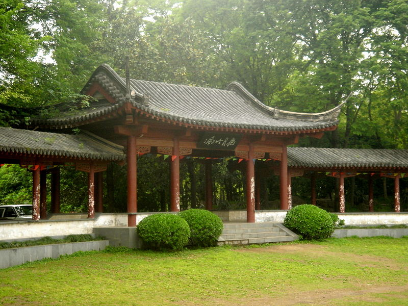

{kind=link}

Mochou Lake Park
{kind=link}

Nanjing city wall

"Elephant Road" of the
Ming tomb

Nanjing's skyline

Science and Technology
Museum
ITP Heritage and Conference History |
[Home] [Important Dates] [CFP] [Accepted Papers] [Committees] [ITP 2016 Bids]
ITP 2015 is the sixth conference on Interactive Theorem Proving and related topics, ranging from theoretical foundations to implementation aspects and applications in program verification, security, and formalization of mathematics. The inaugural meeting of ITP was held on 11-14 July 2010 in Edinburgh, Scotland, as part of the Federated Logic Conference (FLoC, 9-21 July 2010). ITP is the evolution of the TPHOLs conference series to the broad field of interactive theorem proving. TPHOLs meetings took place every year from 1988 until 2009.
The TPHOLs conference series
TPHOLs 2009 was the twenty-second in a series of international conferences on the applications of higher order logic theorem proving. The first three (two at Cambridge and one at Århus) were informal users' meetings for the HOL system and were the only ones without published papers. Between 1991 and 1995 (Davis, Leuven, Vancouver, Malta, Utah) the conference entertained an increasingly wide field of interest.
The evolution resulted in the program committee for the meeting in Turku (1996) deeming that the scope of the conference included all reasoning tools for higher order logics and adopted the name TPHOLs, being an acronym for Theorem Proving in Higher Order Logics. (The final letter being considered necessary to break the direct connection between the conference and the HOL system.) This decision was strongly endorsed at the business sessions at Turku and Murray Hill (1997).
An extensive collection of links to various aspects of previous conferences in the series may be found below.
Associated communities
An inspection of the proceedings of recent conferences show that the conference accommodates the user communities of a number of theorem proving systems that support higher order logics. The interested reader is referred to the web sites for the following provers:
Abella -
Agda -
ACL2 -
Coq -
HOL -
IMPS -
Isabelle -
LEGO -
Matita -
Nuprl -
ProofPower -
PVS -
Traditions
A longstanding convention is that the annual conference should be held in a continent different to the location of the previous meeting. Another tradition is that the organizers for each meeting handle all aspects of the conference for the whole year in consultation with the previous few organizers. This includes selection of the programme committee, editing the proceedings, fund-raising, programme and local arrangements. Another responsibility of the organizers in year n is to call for bids and conduct a poll for the selection of the venue for the conference in year n+1.
ITP and TPHOLs conferences
| 2014 | 5th International Conference on Interactive Theorem Proving, Vienna, Austria, July 14-17, 2014, associated with FloC and the Vienna Summer of Logic. |
| 2013 | 4th International Conference on Interactive Theorem Proving, Rennes, France, July 22-26, 2013 |
| 2012 | 3rd International Conference on Interactive Theorem Proving, Princeton, NJ, US, August 13-15 2012 |
| 2011 | 2nd International Conference on Interactive Theorem Proving, The Netherlands, August 22-25 2011 |
| 2010 | 1st International Conference on Interactive Theorem Proving, Edinburgh, Scotland, July 11-14, 2010 |
| 2009 | The 22nd International Conference on Theorem Proving in Higher Order Logics, Munich, Germany, August 17-20, 2009. |
| 2008 | The 21th International Conference on Theorem Proving in Higher Order Logics, Montreal, Canada, August 18-21, 2008. |
| 2007 | The 20th International Conference on Theorem Proving in Higher Order Logics, Kaiserslautern, Germany, September 10-13, 2007. |
| 2006 | The 19th International Conference on Theorem Proving in Higher Order Logics merged with FloC, Seattle, August 17-20, 2006. |
| 2005 | The 18th International Conference on Theorem Proving in Higher Order Logics, Oxford, UK , 22-25 August 2005. |
| 2004 | The 17th International Conference on Theorem Proving in Higher Order Logics, Park City, Utah, USA, 14-17 September 2004. |
| 2003 | The 16th International Conference on Theorem Proving in Higher Order Logics, Rome, Italy, 9-12 September 2003. |
| 2002 | The 15th International Conference on Theorem Proving in Higher Order Logics, Hampton, Virginia, USA, 20-23 August 2002. |
| 2001 | The 14th International Conference on Theorem Proving in Higher Order Logics, Edinburgh, Scotland, 3-6 September 2001. |
| 2000 | The 13th International Conference on Theorem Proving in Higher Order Logics, Portland, Oregon, USA, 14-18 August 2000. |
| 1999 | The 12th International Conference on Theorem Proving in Higher Order Logics, Unversity of Nice-Sophia-Antipolis, Nice, France, 14-17 September 1999. |
| 1998 | The 11th International Conference on Theorem Proving in Higher Order Logics, The Australian National University, Canberra, Australia, 28 September - 1 October 1998. |
| 1997 | The 10th International Conference on Theorem Proving in Higher Order Logics, Bell Labs, Murray Hill, New Jersey, USA, 19-22 August 1997. |
| 1996 | The 9th International Conference on Theorem Proving in Higher Order Logics, Turku Center for Computer Science and Åbo Akademi University, Turku, Finland, 26-30 August 1996. |
| 1995 | The 8th International Workshop on Higher Order Logic Theorem Proving and its Applications, Aspen Grove, Utah, USA, 11-14 September 1995. |
| 1994 | The 7th International Workshop on Higher Order Logic Theorem Proving and its Applications, Valletta, Malta, 19-22 September 1994. |
| 1993 | The 6th International Workshop on Higher Order Logic Theorem Proving and its Applications, Vancouver, B.C., Canada, 10-13 August 1993. |
| 1992 | The 5th International Workshop on Higher Order Logic Theorem Proving and its Applications, IMEC, Leuven, Belgium, 21-24 September 1992. |
| 1991 | The 4th International Workshop on the HOL Theorem Proving System and its Applications, Davis, California, USA, 28-30 August 1991. |
| 1990 | The 3rd International HOL Users Meeting, Aarhus University, Denmark, 1-2 October 1990. |
| 1989 | The 2nd International HOL Users Meeting, Trinity Hall, Cambridge, 14-15 December 1989. |
| 1988 | The 1st International HOL Users Meeting, Sidney Sussex College, Cambridge, 29-30 September 1988. |